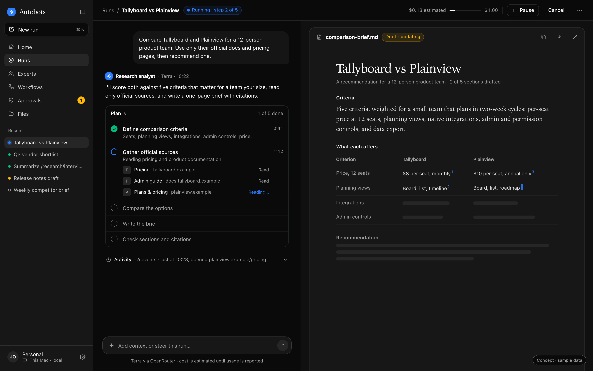
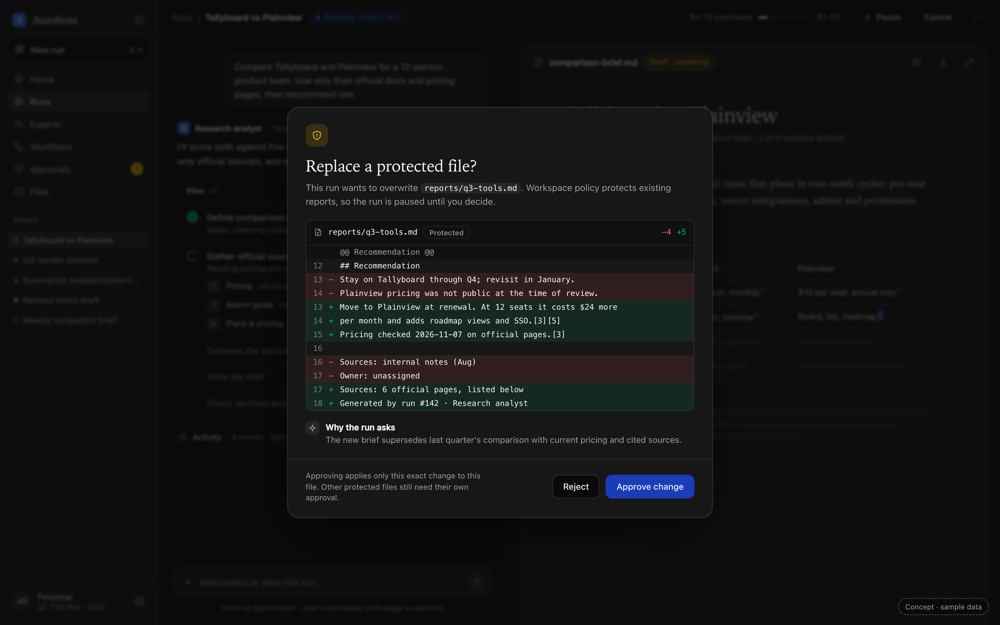
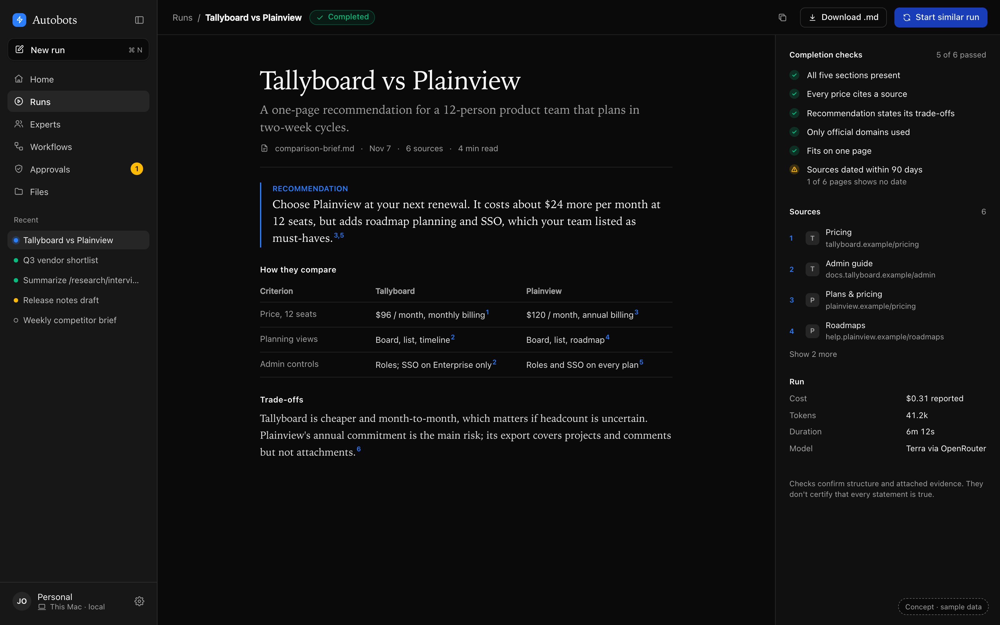
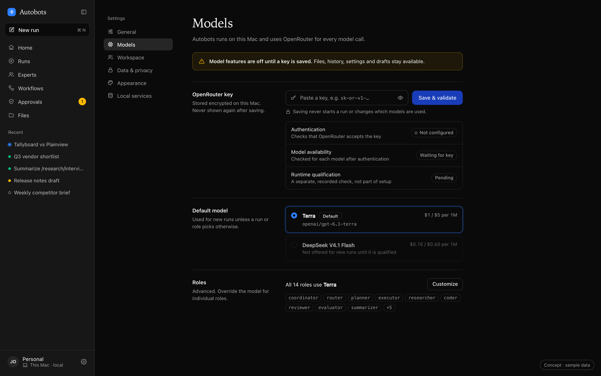
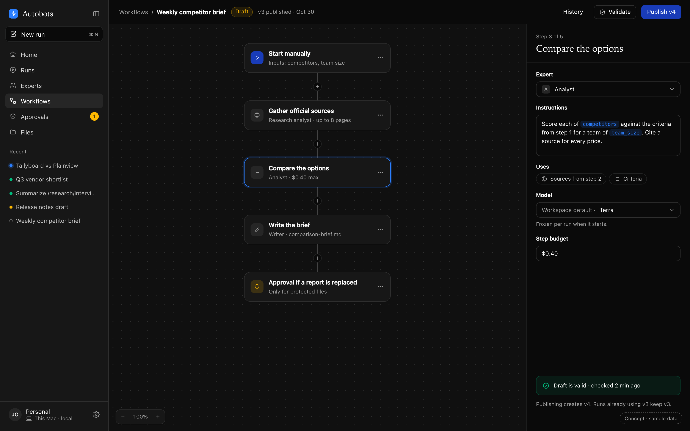

A quieter Autobots.
Six screens redesigned around the work itself: a calm composer, a run that reads like a conversation beside its document, and results you can read before you audit. Built as HTML on the exact Luma tokens, shown in dark and light.
Start with a goal
A centered composer with the expert, run limit and model inline. The disclosure about what leaves the Mac sits directly under it.

Follow the work
The plan and sources read as a thread on the left; the document takes shape on the right. Spend and controls stay in the top bar.


Review the exact change
A focused dialog over the paused run shows the diff, the reason and the scope of what approving means.


Read the result, then its evidence
The brief is set for reading. Checks, numbered sources and reported usage live in a quiet rail beside it.


Connect OpenRouter
Keyless state first: what still works, what saving does and doesn't do, and three separate statuses.


Make the task repeatable
A vertical flow on a dotted canvas, an inspector for the selected step, and an explicit draft versus published version.

